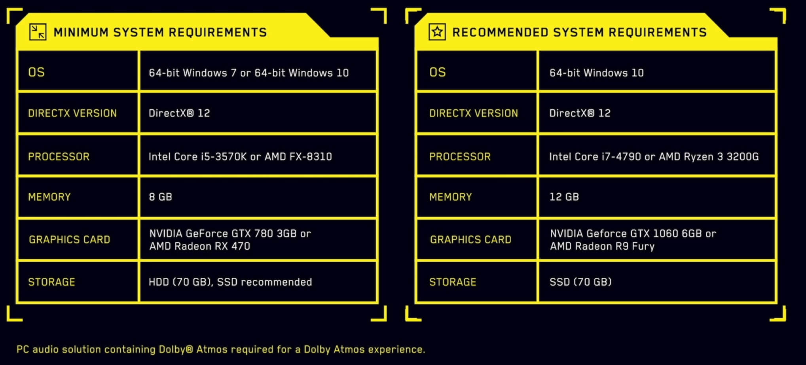
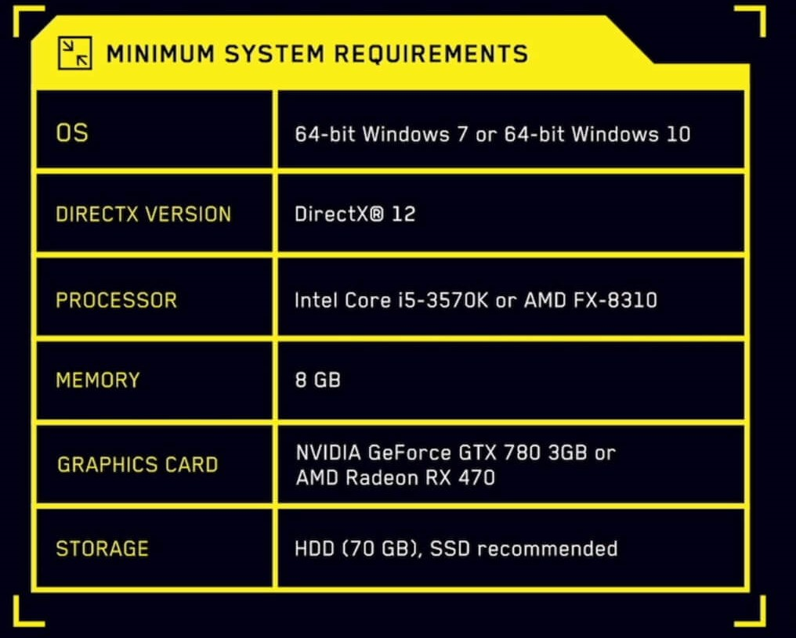
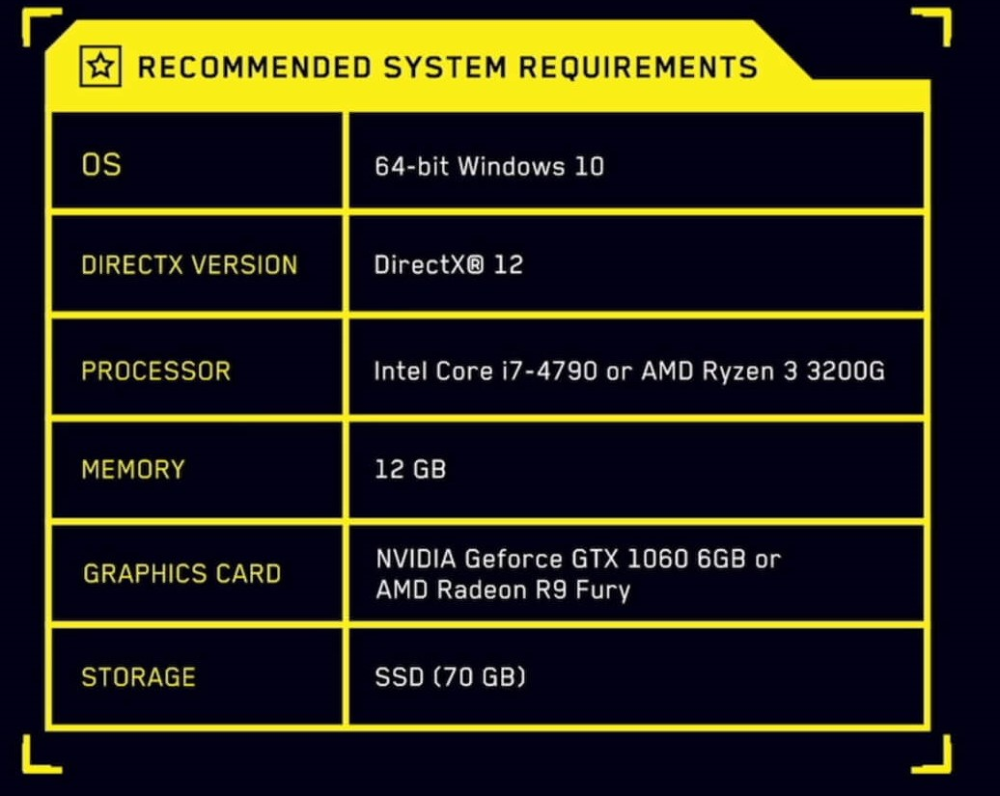

- Cyberpunk 2077 devrait arriver sur PC et consoles, "une fois qu'il sera prêt". Pas de date de sortie donc, et si CD Projekt s'est engagé à commercialiser le jeu sur Xbox One et PS4, on voit mal comment la démo présentée durant l'E3 2018 pourrait tourner sur ces machines.
- Il s'agira d'un jeu de rôle en vue à la première personne dans un univers futuriste dystopique influencé par le jeu de plateau éponyme, mais aussi par des pilliers de la science-fiction comme Blade Runner ou encore les romans de William Gibson.
- Le héros, un(e) mercenaire nommé V, sera entièrement et profondément customisable via un éditeur de personnages poussé : sexe, attributs, histoire personnelle, évènements importants qui ont marqué sa vie...
- Comme The Witcher avant lui, Cyberpunk 2077 veut mettre l'accent sur l'écriture des quêtes, la liberté d'action et la multitude d'approches possible sur l'ensemble du jeu.
- Epousant la thématique transhumaniste du scénario, le jeu proposera notamment d'installer sur son héros différentes augmentations, aux utilités variées (des griffes pour la grimpette à la lentille de scan en passant par une paume permettant d'avoir en temps réel des infos sur son arme).
- Marcin Przybyłowicz, compositeur sur The Witcher 3, reprendra bien son rôle pour Cyberpunk 2077.


